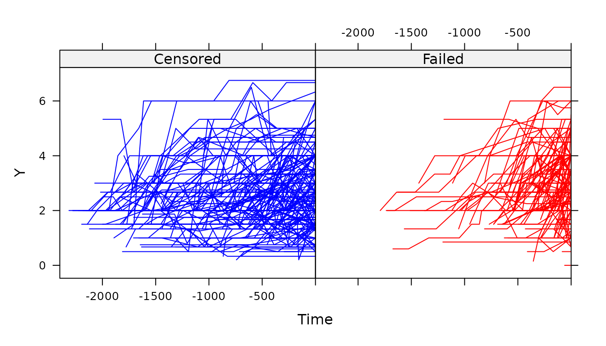

Competing risks
Graeme L. Hickey, Pete Philipson, Ruwanthi Kolamunnage-Dona, Paula Williamson
2026-06-28
Source:vignettes/competing-risks.Rmd
competing-risks.RmdAs of version 1.2.0, joineR fits the joint model
proposed by Williamson et al. (2008) for joint models of longitudinal
data and competing risks. Here, the longitudinal data submodel remains
as per that analyzed in Henderson et al. (2000), namely
where is a repeated measurement on subject at time , is a latent vector that follows a zero-mean multivariate normal distribution, and are vectors of explanatory variables that may be time-constant or time-varying, and the are mutually independent errors, $\epsilon_i(t) \sim {\rm N}(0, \tau^2)$.
For the competing risks data, a cause-specific hazards submodel is proposed, namely
where
is a vectors of time-constant explanatory variables,
is another latent vector that follows a zero-mean multivariate normal
distribution, and
is the baseline hazard function for cause
.
In joineR, when competing risks data are analysed,
,
We also note that currently only 2 failure types are be modelled, which
must be coded as 1 and 2 (with 0 representing censoring).
Example
We will perform the analysis from Williamson et al. (2008) to the SANAD (Standard And New Antiepileptic Drugs) study data – the largest trial of AEDs to date (Marson et al., 2007).
Background
The time to withdrawal of a randomized drug or addition of another, has been recommended by the International League Against Epilepsy to be one of the primary endpoints for clinical trials of anti-epileptic drugs (AEDs) (Commission on Antiepileptic Drugs, 1998). Patients may decide to switch to an alternative AED because of inadequate seizure control (ISC) or to withdraw from a treatment because of unacceptable adverse effects (UAE). Overall analysis of treatment failures may miss differential effects of AEDs on the reasons for withdrawal, which may differ in terms of their relative importance for patients (Williamson et al., 2007).
The primary SANAD analysis of patients with partial epilepsy concluded that the newer drug lamotrigine (LTG) was preferable in terms of treatment failure to carbamazepine (CBZ), which had been the standard for many years (Williamson et al., 2006). LTG was significantly better in terms of withdrawal for UAE and not significantly worse in terms of withdrawal for poor seizure control. Subsequent correspondence after the trial results were published indicated that some readers were concerned that differential titration rates may have been to the disadvantage of CBZ (Cross et al., 2007). An AED that is titrated more quickly may bring benefits in terms of seizure control but be more likely to cause adverse effects. This criticism has also been leveled at previous AED trials (O’Donoghue & Sander, 1995).
Data
SANAD was an unblinded randomized trial recruiting patients with epilepsy for whom CBZ was considered to be standard treatment and they were randomized to CBZ, gabapentin, LTG, oxcarbazepine or topiramate (Marson et al., 2007). Time to treatment failure was a primary outcome with the analysis of competing risks, i.e. treatment failure due to either ISC or UAE, an important secondary objective. Although LTG appeared to be superior to CBZ in the main analysis, concerns were raised that the results were biased in favor of the newer drug. CBZ was considered to have been titrated more quickly bringing benefits in terms of seizure control but being more likely to cause adverse effects. The data set analysed here, comparing CBZ and LTG, includes 605 patients. During the trial, 94 patients withdrew from the randomized drug due to UAE while 120 withdrew due to ISC. In order to compare the two AEDs after adjusting for titration rate, dose calibration was first undertaken by standardizing the dose of both drugs relative to the midpoint of the maintenance dose range for each particular drug. The maintenance dose recommended in the SANAD trial was independently deemed to be reasonable (Faught, 2007) and the approach to calibration considered sensible. These calibrated doses are taken to be the longitudinal measurements in the competing-risks joint model.
The data is available in the joineR package by
running
## id dose time with.time with.status with.status2 with.status.uae
## 1 1 2.00 86 2400 0 0 0
## 2 1 2.00 119 2400 0 0 0
## 3 1 2.00 268 2400 0 0 0
## 4 1 2.67 451 2400 0 0 0
## 5 1 2.67 535 2400 0 0 0
## 6 1 2.67 770 2400 0 0 0
## with.status.isc treat age gender learn.dis
## 1 0 CBZ 75.67 M No
## 2 0 CBZ 75.67 M No
## 3 0 CBZ 75.67 M No
## 4 0 CBZ 75.67 M No
## 5 0 CBZ 75.67 M No
## 6 0 CBZ 75.67 M NoIn the analysis, Williamson et al. (2008) considered an interaction term between time and treatment in the longitudinal data submodel. Therefore, we will manually code this term using
epileptic$interaction <- with(epileptic, time * (treat == "LTG"))A jointdata object is first constructed using the
jointdata() function. Note that there are several status
columns: with.status is a composite event status (treatment
failure or censored), with.status.uae is a binary event
status for UAE (with failure due to ISC treated as censoring),
with.status.isc is a binary event status for ISC (with
failure due to UAE treated as censoring), and with.status2
is a vector taking values 0, 1, and 2, with 0 denoting censoring and 1
and 2 denoting dropout due to ISC and UAE, respectively.
longitudinal <- epileptic[, c(1:3, 13)]
survival <- UniqueVariables(epileptic, c(4, 6), "id")
baseline <- UniqueVariables(epileptic, "treat", "id")
data <- jointdata(longitudinal = longitudinal,
survival = survival,
baseline = baseline,
id.col = "id", time.col = "time")
summary(data)## $subjects
## [1] "Number of subjects: 605"
##
## $longitudinal
## class
## dose numeric
## time integer
## interaction integer
##
## $survival
##
## Number of subjects that fail due to cause 1: 120
## Number of subjects that fail due to cause 2: 94
## Number of subjects censored: 391
##
## $baseline
## class
## treat factor
##
## $times
## [1] "Unbalanced longitudinal study or more than twenty observation times"
jointplot(data, Y.col = "dose", Cens.col = "with.status2")## Warning in jointplot(data, Y.col = "dose", Cens.col = "with.status2"):
## jointplot does not display profiles for different failure events
Model
To fit the joint model, we use the usual joint()
function as
fit2 <- joint(data = data, long.formula = dose ~ time + treat + interaction,
surv.formula = Surv(with.time, with.status2) ~ treat,
longsep = FALSE, survsep = FALSE, gpt = 3)## Competing risks detected
summary(fit2)##
## Call:
## joint(data = data, long.formula = dose ~ time + treat + interaction,
## surv.formula = Surv(with.time, with.status2) ~ treat, longsep = FALSE,
## survsep = FALSE, gpt = 3)
##
## Random effects joint model
## Data: data
## Log-likelihood: -4056.936
##
## Longitudinal sub-model fixed effects: dose ~ time + treat + interaction
## (Intercept) 1.9730179636
## time 0.0003545439
## treatLTG -0.1380959688
## interaction 0.0006185222
##
## Competing risks sub-model effects: Surv(with.time, with.status2) ~ treat
## Failure cause 1:
## treatLTG 0.02721022
## Failure cause 2:
## treatLTG -0.6601433
##
## Latent association:
## gamma_1 0.5894143
## gamma_2 -0.9258597
##
## Variance components:
## U_0 U_1 Residual
## 7.321131e-01 1.211086e-06 1.964523e-01
##
## Convergence at iteration: 19
##
## Number of observations: 2797
## Number of groups: 605To estimate standard errors, we use the jointSE()
function as follows. However, we do not run the code in this vignette
due to computational time required.
fit2.se <- jointSE(fit2, n.boot = 100)
fit2.seConclusion
Significant estimates in the model suggests that calibrated dose is associated with time to treatment failure for both particular causes. It is observed that these estimates have opposite signs for the two failure reasons. This was a situation anticipated previously in this application, since side effects are more likely at higher doses, whereas seizure control is poorer at low doses (Williamson et al., 2006). Thus, patients on higher doses may be more likely to be withdrawn from treatment due to poor seizure control since the reason they are on higher doses is that they are having continued seizures. Patients on higher doses may also be less likely to be withdrawn from treatment due to UAE since the reason a required dose increase is possible is because no such events have occurred
The results from all models fitted suggest that if LTG is titrated at the same rate as CBZ, the beneficial effect of LTG on UAE would still be evident and the two drugs still appear to provide similar seizure control. Thus, the conclusion from the original simpler analysis of the cause-specific hazards is found to be robust to the variation in titration between the drugs in the trial.
Acknowledgements
The joineR package was funded by the UK Medical Research
Council (MRC) under a grant with Principal Investigator (PI) Prof. Paula
Williamson; Co-Investigators (Co-Is) Prof. Peter J. Diggle and
Prof. Robin Henderson; and Research Associates Dr Ruwanthi
Kolamunnage-Dona, Dr Peter Philipson, and Dr Ines Sousa (Grant numbers
G0400615). Updates to it were made under a separate MRC grant with PI Dr
Ruwanthi Kolamunnage-Dona, Co-Is Dr Peter Philipson and Dr Andrea
Jorgensen, and Research Associate Dr Graeme L. Hickey (Grant number
MR/M013227/1).
References
Williamson PR, Kolamunnage-Dona R, Philipson P, Marson AG. Joint modelling of longitudinal and competing risks data. Statistics in Medicine, 2008; 27: 6426-6438.
Henderson R, Diggle PJ, Dobson A. Joint modelling of longitudinal measurements and event time data. Biostatistics, 2000; 1: 465-480
Marson AG, Al-Kharusi AM, Alwaidh M, Appleton R, Baker GA, Chadwick DW, Cramp C, Cockerell OC, Cooper PN, Doughty J, Eaton B, Gamble C, Goulding PJ, Howell SJL, Hughes A, Jackson M, Jacoby A, Kellett M, Lawson GR, Leach JP, Nicolaides P, Roberts R, Shackley P, Shen J, Smith DF, Smith PEM, Tudur Smith C, Vanoli A, Williamson PR on behalf of the SANAD Study group. Carbamazepine, gabapentin, lamotrigine, oxcarbazepine or topiramate for partial epilepsy: results from the SANAD trial. The Lancet, 2007; 369: 1000–1015.
Commission on Antiepileptic Drugs. Considerations on designing clinical trials to evaluate the place of new antiepileptic drugs in the treatment of newly diagnosed and chronic patients with epilepsy. Epilepsia, 1998; 39: 799–803.
Williamson PR, Smith CT, Josemir WS, Marson AG. Importance of competing risks in the analysis of anti-epileptic drug failure. Trials, 2007; 8: 12.
Williamson PR, Kolamnunnage-Dona R, Tudur Smith C. The influence of competing risks setting on the choice of hypothesis test for treatment effect. Biostatistics, 2006; 8: 689–694.
Cross H, Ferrie C, Lascelles K, Livingston J, Mewasingh L. Old versus new antiepileptic drugs: the SANAD study. The Lancet, 2007; 370: 314.
O’Donoghue MF, Sander JWAS. Lamotrigine versus carbamazepine in epilepsy. The Lancet, 1995; 345: 1300.
Faught E. Epilepsy drugs: getting it right the first time. Lancet Neurology, 2007; 6: 476–478.